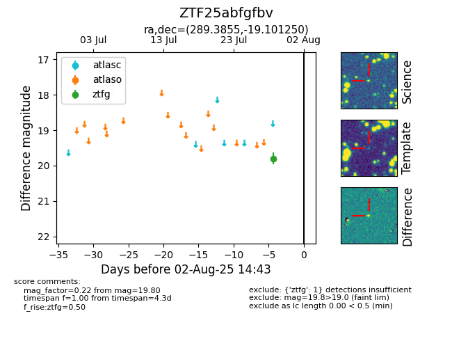

Target ZTF25abfgfbv at 2025-08-02 14:43, see:
FINK: fink-portal.org/ZTF25abfgfbv
Lasair: lasair-ztf.lsst.ac.uk/objects/ZTF25abfgfbv
ALeRCE: alerce.online/object/ZTF25abfgfbv
alt names
ZTF25abfgfbv (ztf,fink)
coordinates:
equatorial (ra, dec) = (289.3855,-19.10125)
galactic (l, b) = (18.4621,-14.16986)
photometry
last ztfg=19.80
1 ztfg detections
